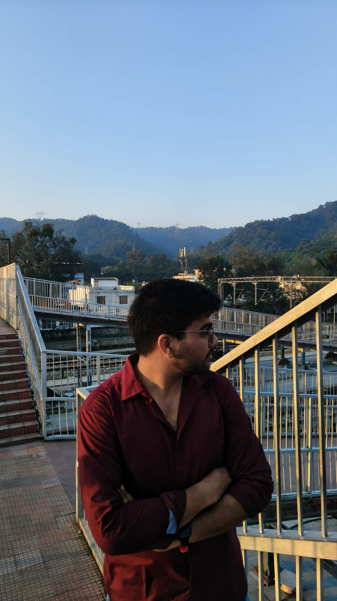

A little about me
Learning by
making.
I’m Mayur, a computer science student from Haridwar, India, interested in building useful software and exploring how AI can solve real problems.
A curious mind, focused on building useful things

BASED IN HARIDWAR, INDIA
I’m studying Computer Science and Engineering and enjoy working across software development, data structures and algorithms, and artificial intelligence. My current toolkit includes Java, Python, C, SQL, and machine learning.
I learn best by building. I’ve worked on machine learning experiments, data projects, and practical web applications, while regularly practicing problems on LeetCode and GeeksforGeeks.
Right now, I’m exploring the intersection of software engineering and AI, especially machine learning, Generative AI, LLMs, and databases. I want to keep growing into a thoughtful, well-rounded software engineer.
Exploring AI
Learning machine learning and building with LLMs.
Practicing fundamentals
Working through algorithms and core CS concepts.
Building projects
Turning ideas into useful software and learning from each iteration.